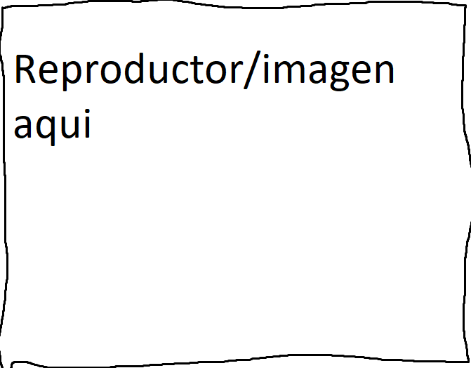

Titulo de la cancion

AQUI VA LA DESCRIPCION SACADA DE WIKIPEDIA/SPOTIFY ETC.En un lugar de la Mancha, de cuyo nombre no quiero acordarme, no ha mucho tiempo que vivía un hidalgo de los de lanza en astillero, adarga antigua, rocín flaco y galgo corredor. Una olla de algo más vaca que carnero, salpicón las más noches, duelos y quebrantos los sábados, lentejas los viernes, algún palomino de añadidura los domingos, consumían las tres partes de su hacienda. El resto della concluían sayo de velarte, calzas de velludo para las fiestas con sus pantuflos de lo mismo, los días de entre semana se honraba con su vellori de lo más fino. Tenía en su casa una ama que pasaba de los cuarenta, y una sobrina que no llegaba a los veinte, y un mozo de campo y plaza, que así ensillaba el rocín como tomaba la podadera. Frisaba la edad de nuestro hidalgo con los cincuenta años, era de complexión recia, seco de carnes, enjuto de rostro; gran madrugador y amigo de la caza. Quieren decir que tenía el sobrenombre de Quijada o Quesada (que en esto hay alguna diferencia en los autores que deste caso escriben), aunque por conjeturas verosímiles se deja entender que se llama Quijana; pero esto importa poco a nuestro cuento; basta que en la narración dél no se salga un punto de la verdad.
Comentarios

Nombre User
Hola probando Probando soy un comentario lalalalalalalalalalalala